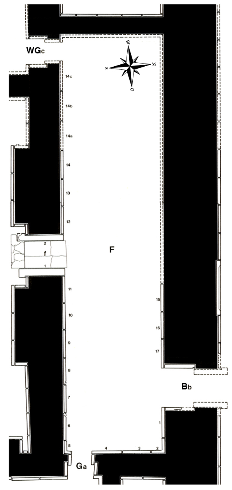

Room F
Room F connects the throneroom and the inner courtyard (Y); it also gives access to Room G on the eastern side and to Room WG, part of the west wing. Henry Layard excavated the room in June of 1846 and found 17 relief slabs, covering the eastern and southern walls, as well as the eastern part of the north wall, while the remaining sides of the room had been robbed of their reliefs in antiquitiy—one of the slabs from this room (F-14c) and some from the west wing were found in the so-called Southwest Palace built by king Assur-aḫḫū-iddina in the 7th century. They had been set up there, the reliefs facing the walls, waiting to have new images cut into their obverse sides. Layard gave a short description of the room’s decoration: “All the slabs, except No. 4, occupied by colossal eagle-headed figures in pairs, facing one another, and separated by the symbolic tree. No. 4. Colossal figure of the king attended by eagle-headed figures, and wearing figures of the sun, moon, star, horned cap, and bident round his neck.” Three of the slabs (F-3, F-4 and F-8) are now in the British Museum; four more are either lost completely (F-7) or are still in situ, but with big parts missing (F-10, F-11, F-15) or badly damaged (F-12 - F-14). The rest of the reliefs recovered by Layard made their way into various collections through gift or sale.
Click on F in the middle of the room to see all panels positioned in their respective walls, or on the individual panels along the inner walls and in the entryways to go to CDLI pages associated with them.
 |
Relief Slabs by Collection (duplication results from individual fragments in different places)
British Museum, London, UK |